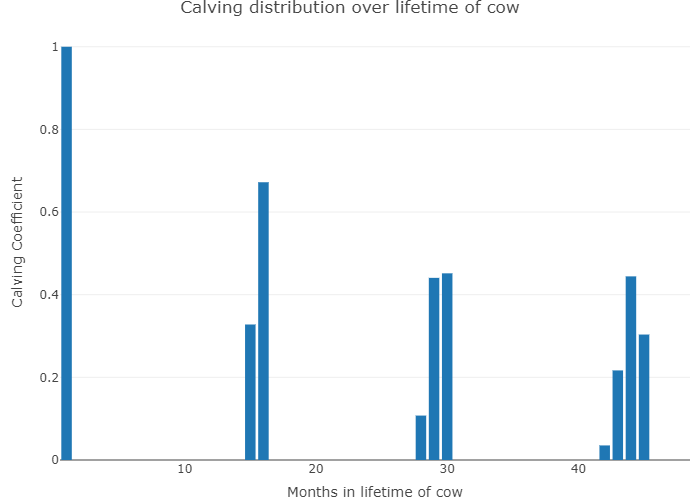

Cattle Module
Abstract The cattle module is closely related to the general herd module. It describes the demographic relations between cattle types (dairy cows, mother cows, male and female calves, heifers, young bulls) on the farm. The cattle feed requirements are calculated considering the animals performance and the lactation phase of cows. The requirements can be met via a mix from own produced and purchased fodder, concentrates and grazing from pastures.
The set phase lists the different phases and the month during the year they are in.
set phase "lactation phase / dry / general / months in year" / LC30_1,LC92_1,LC213_1,LC305_1,dry_1, LC30_2,LC92_2,LC213_2,LC305_2,dry_2, LC30_3,LC92_3,LC213_3,LC305_3,dry_3, LC30_4,LC92_4,LC213_4,LC305_4,dry_4, LC30_5,LC92_5,LC213_5,LC305_5,dry_5, LC30_6,LC92_6,LC213_6,LC305_6,dry_6, GEN,0_2,3_/;
The set reqsPhase lists the different rquirement phases. The "LC" labeled elements are the requirement phases for different lactation phases, the element "dry" refers to the dry period where cows are not lactating, the element "gen" is for heifers and bulls that are not lactating and the elements "0_2" and "3_" are for calves.
set reqsPhase / LC30,LC92,LC213,LC305,dry,GEN,0_2,3_/;
The cross-set phase_reqsPhase links the monthly phases to the general requirement phases.
set phase_reqsPhase(phase,reqsPhase) /
(LC30_1,LC30_2,LC30_3,LC30_4,LC30_5,LC30_6).LC30
(LC92_1,LC92_2,LC92_3,LC92_4,LC92_5,LC92_6).LC92
(LC213_1,LC213_2,LC213_3,LC213_4,LC213_5,LC213_6).LC213
(LC305_1,LC305_2,LC305_3,LC305_4,LC305_5,LC305_6).LC305
(dry_1,dry_2,dry_3,dry_4,dry_5,dry_6).dry
GEN.GEN,
* * -- for calves raising processes, first two months and rest * 0_2.0_2,3_.3_
/; The set phase_startPhase lists the starting monthly phases to the general requirement phases.
set phase_startPhase(phase,reqsPhase) / (LC30_1).LC30 (LC92_1).LC92 (LC213_1).LC213 (LC305_1).LC305 (dry_1).dry /;
Cattle feeding
The feeding of cattle consists of two major elements:
-
Requirement functions and related constraints in the model template
-
Feeding activities, which ensure that requirements are covered and link the animal to the cropping sector as well as to purchases of concentrates
The requirements are defined in coeffgen\requ.gms. Requirements for dairy cows are differentiated by annual milk yield and by lactation period. The model differentiates 5 lactation periods with different lengths (30 - 70 - 100 - 105 - 60 days, where the last 60 days are the dry period). The periods are labelled according to their last day, e.g. LC200 is the period from day 101 to day 200, LC305 is the period from the 201st to the 305th day and dry denotes the last 60 days of lactation.
Excurse - Computation of Output Coefficients for each Lactation Phase
This excurse describes the derivation of the output coefficient for each lactation phase, hence how much of yearly milk yield is produced by each cow on one day.
 : Figure 3: Lactation Curves of Different Yearly Milk Yield Potentials and
Average Milk Yield in Different Lactation Phases.
: Remark: Calculation based on Huth (1995, pp.224-226).
: Figure 3: Lactation Curves of Different Yearly Milk Yield Potentials and
Average Milk Yield in Different Lactation Phases.
: Remark: Calculation based on Huth (1995, pp.224-226).
: Source: Own illustration.
Using the above shown lactation functions, the daily fraction of the yearly milk yield in each lactation phase can be derived. The mean over the four milk yield potentials of the coefficients are shown in Table 1.
Table 1: Daily Fraction of Whole Lactation Milk Yield in Different Lactation Phases.
| LC30 | LC100 | LC200 | LC3005 | Dry | |
|---|---|---|---|---|---|
| Daily fraction | 0.00356 | 0.0043 | 0.00333 | 0.00233 | 0 |
Remark: Own calculation based on Huth (1995, pp.224-226).
Following these outputs, e.g. on each of the first 30 days of lactation, the cow produces 0.356 % of the yearly milk yield (e.g. 28 kg per day for a cow which produces 8000 kg per year). In a next step, these coefficients are used to calculate the sum of milk output in each lactation phase to further calculate feed requirements stemming from the herds in each phase.
The daily milk yield in each period is based on the following statements which define milk yield in ton per year, stored on the general output coefficient parameter p_OCoeff. The coefficient is scaled to match total yearly milk yield.
p_mlkPerDay(dcows,curBreeds,"LC30") $ herds_breeds(dcows,curBreeds) = 0.003555556 * sum(t $ (t.pos eq 1), p_OCoeff(dcows,"milk",curBreeds,t) * 1000);
p_mlkPerDay(dcows,curBreeds,"LC92") $ herds_breeds(dcows,curBreeds) = 0.004333333 * sum(t $ (t.pos eq 1), p_OCoeff(dcows,"milk",curBreeds,t) * 1000);
p_mlkPerDay(dcows,curBreeds,"LC213") $ herds_breeds(dcows,curBreeds) = 0.003333333 * sum(t $ (t.pos eq 1), p_OCoeff(dcows,"milk",curBreeds,t) * 1000);
p_mlkPerDay(dcows,curBreeds,"LC305") $ herds_breeds(dcows,curBreeds) = 0.002333333 * sum(t $ (t.pos eq 1), p_OCoeff(dcows,"milk",curBreeds,t) * 1000);
p_mlkPerDay(dcows,curBreeds,"LC30") $ herds_breeds(dcows,curBreeds) = 0.003555556 * sum(t $ (t.pos eq 1), p_OCoeff(dcows,"milk",curBreeds,t) * 1000);
p_mlkPerDay(dcows,curBreeds,"LC92") $ herds_breeds(dcows,curBreeds) = 0.004333333 * sum(t $ (t.pos eq 1), p_OCoeff(dcows,"milk",curBreeds,t) * 1000);
p_mlkPerDay(dcows,curBreeds,"LC213") $ herds_breeds(dcows,curBreeds) = 0.003333333 * sum(t $ (t.pos eq 1), p_OCoeff(dcows,"milk",curBreeds,t) * 1000);
p_mlkPerDay(dcows,curBreeds,"LC305") $ herds_breeds(dcows,curBreeds) = 0.002333333 * sum(t $ (t.pos eq 1), p_OCoeff(dcows,"milk",curBreeds,t) * 1000);
The model differentiates between requirements for energy in net-energy for lactation, raw protein and maximum dry matter. The feeding requirements are described by the parameter p_reqsPhase for each herd and a certain requirement phase. As described earlier, the requirement phases of cows are differentiated into specific, fixed stages during lactation. For bulls, heifers, and calves, the amount of feeding/requirement phases are defined over the GUI. For each feeding phase, the daily requirements during the production process are identical.
The requirement functions account for differing start and final weights, as well as daily weight gains of the animals. The underlying regression models were kindly provided by the Institut für Tierernährung und Futterwirtschaft of the Bayerische Landesandstalt für Landwirtschaft (LfL)1.
The requirements per requirement phase p_reqsPhase are subsequently converted into values per month, in order to ensure that the animals are correctly fed throughout the requirement period.
p_reqsPhaseMonths(herds,curBreeds,feedRegime,reqsPhase,reqs) $ p_reqsPhaseLength(herds,curBreeds,reqsPhase)
= p_reqsPhase(herds,curBreeds,reqsPhase,reqs)/p_reqsPhaseLength(herds,curBreeds,reqsPhase) * 30.5;
The monthly requirements per planning period, p_reqsPhaseMonths, enter the equation structure of the model. The equations are differentiated by herd, year,
planning period and state-of-nature (SON), and ensure the requirements are
covered by an appropriate feed mix made out of different feeding
stuff. The composition of the feed mix is determined endogenously. The total feed requirements for a farm in the different intra-yearly planning periods depend on the
distribution of calving dates in the cow herd, therefore, cows of the
same milk yield potential can be in different lactation phases during
the year. The requirements of tons of feed, v_feeding, are
differentiated by herd, breed, planning period (lactation phase of cow), SON and year, if the requirement phases are not defined for
specific time spans after the herd start:
reqs_(actHerds(possHerds,breeds,feedRegime,tCur(t),m),reqsPhase,reqs,nCur)
$ ( p_reqsPhaseLengthMonths(possHerds,breeds,"gen")
$ p_reqsPhaseMonths(possHerds,breeds,feedRegime,reqsphase,reqs)
$ t_n(t,nCur)) ..
*
* --- herd size times requirements per head, minus year and SON specific reduction in milk yield
v_herdSize(possHerds,breeds,feedRegime,t,nCur,m)
* p_reqsPhaseMonths(possHerds,breeds,feedRegime,reqsPhase,reqs)
*
* --- these corrections are endogenous during automatic calibration, otherwise fixed to
* loaded calibration results or equal to unity
*
*( v_reqsCorr(possHerds,breeds,"Ener") $ (sameas(reqs,"NEL") or sameas(reqs,"ME"))
+ v_reqsCorr(possHerds,breeds,"Prot") $ (sameas(reqs,"XP") or sameas(reqs,"nXP"))
+ v_reqsCorr(possHerds,breeds,"Rest") $ (not ( sameas(reqs,"XP") or sameas(reqs,"nXP")
or sameas(reqs,"NEL") or sameas(reqs,"ME")))
)
*
* --- must be covered by feeding times the content of the feed stuff
*
=L= sum( feedRegime_feeds(feedRegime,curFeeds(feeds)) $ actHerdsF(possHerds,breeds,feedRegime,reqsPhase,m),
v_feeding(possHerds,breeds,feedRegime,reqsPhase,m,feeds,t,nCur) * p_feedContFMton(feeds,reqs))
;
Alternatively, requirements can be linked to the start point of an
animal process to break down the total requirement during the length of
the production processes in phases. The equation is only switched on if
the parameter p_reqsPhaseLength is non-zero:
reqsPhase_(possHerds,breeds,feedRegime,reqs,reqsPhase,m,t_n(tCur(t),nCur))
$ ( actHerds(possHerds,breeds,feedRegime,t,m)
$ (not p_reqsPhaseLengthMonths(possHerds,breeds,"gen"))
$ p_reqsPhase(possHerds,breeds,reqsPhase,reqs)) ..
*
* --- herds which started in the months before the production length
*
* -- number of months that herd in that requirement phase during that period
* multiplied with monthly requirements
*
sum(actHerds(possHerds,breeds,feedRegime,t,m) $ p_reqsPhaseMonths(possHerds,breeds,feedRegime,reqsPhase,reqs),
v_herdsReqsPhase(possHerds,breeds,feedRegime,reqsphase,m,t,nCur)
* p_reqsPhaseMonths(possHerds,breeds,feedRegime,reqsPhase,reqs)
*
* --- these corrections are endogenous during automatic calibration, otherwise fixed to
* loaded calibration results or equal to unity
*
*( v_reqsCorr(possHerds,breeds,"Ener") $ (sameas(reqs,"NEL") or sameas(reqs,"ME"))
+ v_reqsCorr(possHerds,breeds,"Prot") $ (sameas(reqs,"XP") or sameas(reqs,"nXP"))
+ v_reqsCorr(possHerds,breeds,"Rest") $ (not ( sameas(reqs,"XP") or sameas(reqs,"nXP")
or sameas(reqs,"NEL") or sameas(reqs,"ME")))
))
*
* --- must be covered by feeding times the content of the feed stuff
*
=L= sum((actHerdsF(possHerds,breeds,feedRegime,reqsPhase,m),feedRegime_feeds(feedRegime,curFeeds(feeds))),
v_feeding(possHerds,breeds,feedRegime,reqsPhase,m,feeds,t,nCur) * p_feedContFMton(feeds,reqs))
;
In a next step feeding amounts are aggregated to total feed use, v_feeduse, per each product and for each year, feed and planning period.
feedUse_(curFeeds(feedsY),t_n(tCur(t),nCur)) ..
v_feedUse(feedsY,t,nCur)
=e= sum(actHerdsF(possHerds,breeds,feedRegime,reqsPhase,m) $ feedRegime_feeds(feedRegime,feedsY),
v_feeding(possHerds,breeds,feedRegime,reqsPhase,m,feedsY,t,nCur));
For own produced feed which is not storable and shows a variable availability over the year, such as grass from pasture, an aggregation to the intra-year periods is done.
feedUseM_(curFeeds(feedsM),m,t_n(tCur(t),nCur)) $ sum(actHerdsF(possHerds,breeds,feedRegime,reqsPhase,m),1) ..
v_feedUseM(feedsM,m,t,nCur)
=e= sum( actHerdsF(possHerds,breeds,feedRegime,reqsPhase,m) $ feedRegime_feeds(feedRegime,feedsM),
v_feeding(possHerds,breeds,feedRegime,reqsPhase,m,feedsM,t,nCur));
Feed is further differentiated into bought- (v_feedUseBuy) and self-produced (v_feedUseProds) feed. * * ---- Adding up the bought and own produced feed for cattle * feedUseSource_(curFeeds(feedsY),t_n(tCur(t),nCur)) .. v_feedUse(feedsY,t,nCur) =E= v_feedUseProds(feedsY,t,nCur) $ (sum(sameas(prodsYearly,feedsY),1)) + v_feedUseBuy(feedsY,t,nCur) $ (sum(sameas(curInputs,feedsY),1)) ;
In sumReqs_ the total requirements v_sumReqs are linked to the total feed as in v_feeduse and v_feedUseM.
*
* --- add requirements over herds, total and bought ones
*
sumReqs_(reqs,t_n(tCur(t),nCur)) ..
v_sumReqs(reqs,t,nCur)*1000 =E=
sum( curFeeds(feedsY), v_feedUse(feedsY,t,nCur) * p_feedContFMton(feedsY,reqs))
+ sum( (curFeeds(feedsM),m), v_feedUseM(feedsM,m,t,nCur)* p_feedContFMton(feedsM,reqs));
In sumReqsBought_ the links the total requirements from bought feedstuff, v_sumReqsBought, are summed up.
sumReqsBought_(reqs,t_n(tCur(t),nCur)) ..
v_sumReqsBought(reqs,t,nCur)*1000
=E= sum( (sameas(feedsY,curInputs),sys) $ (p_inputprice%l%(curInputs,sys,t) $ curFeeds(feedsY)),
v_buy(curInputs,sys,t,nCur)*p_feedContFMton(feedsY,reqs));
herdsByFeedRegime_ distributes the herds as in v_herdSize to the requirement phases in v_herdsReqsPhase.
herdsByFeedRegime_(possHerds,curBreeds,feedRegime,t_n(tCur(t),nCur),m)
$ (actHerds(possHerds,curBreeds,feedRegime,t,m)
$ sum(reqsPhase $ (not sameas(reqsPhase,"gen")), p_reqsPhaseLengthMonths(possHerds,curBreeds,reqsPhase))) ..
v_herdSize(possHerds,curBreeds,feedRegime,t,nCur,m)
=E= sum(reqsPhase $ p_reqsPhase(possHerds,curBreeds,reqsPhase,"DMMX"),
v_herdsReqsPhase(possHerds,curBreeds,feedRegime,reqsphase,m,t,nCur)
);
herdsReqsPhase_ determines the herds in a current time point (v_herdstart) and maps them to their current requirement phase and there current production cycle v_herdsReqsPhase (e.g. dry cows in second lactation).
herdsReqsPhase_(possHerds,breeds,reqsPhase,m,t_n(tCur,nCur))
$ ( (not p_reqsPhaseLengthMonths(possHerds,breeds,"gen"))
$ sum(feedRegime, actHerds(possHerds,breeds,feedRegime,tCur,m))
$ p_reqsPhase(possHerds,breeds,reqsPhase,"DMMX") ) ..
sum(actHerds(possHerds,breeds,feedRegime,tCur,m),
v_herdsReqsPhase(possHerds,breeds,feedRegime,reqsphase,m,tCur,nCur))
- --- herds which started in the months before the production length, in case for piglets a separate construct is used
=E=
sum(phase_reqsPhase(phase,reqsPhase) $ p_reqsPhaseStart(possHerds,breeds,phase),
sum( (t1,nCur1,m1) $ ( t_n(t1,nCur1) $ isNodeBefore(nCur,nCur1)
$ [ ( ( -p_mDist(tCur,m,t1,m1)+1-p_reqsPhaseStart(possHerds,breeds,phase) ge 0)
$ ( -p_mDist(tCur,m,t1,m1)+1-p_reqsPhaseStart(possHerds,breeds,phase)
- p_reqsPhaseLengthMonths(possHerds,breeds,reqsPhase) lt 0) $ (p_mDist(tCur,m,t1,m1) le 0)
$ (-p_mDist(tCur,m,t1,m1) le (p_prodLength(possHerds,breeds)-1)) ) or ( ( -p_mDist(tCur,m,t1,m1)+13-p_reqsPhaseStart(possHerds,breeds,phase) ge 0) $ ( -p_mDist(tCur,m,t1,m1)+13-p_reqsPhaseStart(possHerds,breeds,phase) - p_reqsPhaseLengthMonths(possHerds,breeds,reqsPhase) lt 0) ) $ p_compStatHerd ] $ sum(feedRegime,actHerds(possHerds,breeds,feedRegime,t1,m1)) ), v_herdStart(possHerds,breeds,t1,nCur1,m1)* * --- minus, in case of cows, slaughtered before reaching the final age * -sum( (slgtCows,cows) $ (sum(feedRegime, actHerds(slgtCows,breeds,feedRegime,t1,m1)) $ sameas(cows,possHerds) $ (slgtCows.pos eq cows.pos)), v_herdStart(slgtCows,breeds,t1,nCur1,m1)) ));
In feedUseHerds_ the monthly feeding v_feeding is summed up to yearly feeding v_feedUseHerds
feedUseHerds_(possHerds,curFeeds(feeds),t_n(tCur(t),nCur)) $ sum(actHerdsF(possHerds,breeds,feedRegime,reqsPhase,m),1) ..
v_feedUseHerds(possHerds,feeds,t,nCur)
=e= sum(actHerdsF(possHerds,breeds,feedRegime,reqsPhase,m)$ feedRegime_feeds(feedRegime,feeds),
v_feeding(possHerds,breeds,feedRegime,reqsPhase,m,feeds,t,nCur));
maxChlorella_ restricts the maximum dry-matter intake of animals in the form of chlorella-algae to 10% of the total dry matter intake.
maxChlorella_(possHerds,t_n(tCur(t),nCur)) $ (curFeeds("Chlorella") $ sum(actHerdsF(possHerds,breeds,feedRegime,reqsPhase,m),1)) ..
v_feedUseHerds(possHerds,"Chlorella",t,nCur) =L=
0.1 * sum((actHerdsF(possHerds,breeds,feedRegime,reqsPhase,m),feeds)$ feedRegime_feeds(feedRegime,feeds),
v_feeding(possHerds,breeds,feedRegime,reqsPhase,m,feeds,t,nCur));
In sumHerdsYY_ calculates the yearly herd-size by summing up v_herdSize over feedRegime and month.
sumHerdsYY_(sumHerdsY,breeds,t_n(t,nCur)) $ ( (tCur(t) or tBefore(t)) $ sum(actHerds(sumHerdsY,breeds,feedRegime,t,m),1)) ..
v_sumherd(sumHerdsY,breeds,t,nCur)
=e= sum((feedRegime,m) $ actHerds(sumHerdsY,breeds,feedRegime,t,m),
v_herdSize(sumHerdsY,breeds,feedRegime,t,nCur,m));
The equation avgLactations_ orders the herdsize times the pre-determined average lactation length from the GUI, p_nLactations, into a linear combination of integer lactation lenghts as in p_nLac.
* * --- recover average lactations (e.g. 3.7) from short (e.g. 3 lactations) and long (e.g. 4 lactations) cows * avgLactations_(breeds,t_n(t,nCur)) $ sum((feedRegime,m), actHerds("cows",breeds,feedRegime,t,m)) ..
sum( (dCows,feedRegime,m) $ actHerds(dCows,breeds,feedRegime,t,m),
v_herdSize(dCows,breeds,feedRegime,t,nCur,m)*p_nLactations)
=E=
sum( (dCows,feedRegime,m) $ actHerds(dCows,breeds,feedRegime,t,m),
v_herdSize(dcows,breeds,feedRegime,t,nCur,m)*p_nLac(dCows));
The number of new calves v_herdStart is differentiated by gender and breed, in a year t, and specific month m, and depends on the herd size of cows of each breed and a specific calving coefficient. The left hand side adds up all male and female calves, if cross-breeding is switched on, adding the cross-breeds. ActHerds is a flag set to define which herds might enter the solution for a specific year.
newCalves_(dairyBreeds,t,nCur,m) $ ( sum( (calvs,feedRegime), actHerds(calvs,dairyBreeds,feedRegime,t,m))
$ (p_Year(t) le p_year("%lastYear%")) $ t_n(t,nCur) $ (not sameas(dairyBreeds,"%crossBreed%"))) ..
*
* --- new born calves (for females by genetic potential for milk yield) are born
* from the current herd of cows
*
v_herdStartBornCalvsRais("fCalvsRais",dairyBreeds,t,nCur,m) $ sum(feedRegime,actHerds("fCalvsRais",dairyBreeds,feedRegime,t,m))
+ v_herdStart("fCalvsSold",dairyBreeds,t,nCur,m) $ sum(feedRegime,actHerds("fCalvsSold",dairyBreeds,feedRegime,t,m))
+ v_herdStart("mCalvsSold",dairyBreeds,t,nCur,m) $ sum(feedRegime,actHerds("mCalvsSold",dairyBreeds,feedRegime,t,m))
+ v_herdStartBornCalvsRais("mCalvsRais",dairyBreeds,t,nCur,m) $ sum(feedRegime,actHerds("mCalvsRais",dairyBreeds,feedRegime,t,m))
$$iftheni.crossBreed "%crossBreeding%"=="true"
+ v_herdStartBornCalvsRais("fCalvsRais","%crossBreed%",t,nCur,m) $ (sum(feedRegime,actHerds("fCalvsRais","%crossBreed%",feedRegime,t,m)) $ sameas(dairyBreeds,"%crossBreedBase%"))
+ v_herdStart("fCalvsSold","%crossBreed%",t,nCur,m) $ (sum(feedRegime,actHerds("fCalvsSold","%crossBreed%",feedRegime,t,m)) $ sameas(dairyBreeds,"%crossBreedBase%"))
+ v_herdStart("mCalvsSold","%crossBreed%",t,nCur,m) $ (sum(feedRegime,actHerds("mCalvsSold","%crossBreed%",feedRegime,t,m)) $ sameas(dairyBreeds,"%crossBreedBase%"))
+ v_herdStartBornCalvsRais("mCalvsRais","%crossBreed%",t,nCur,m) $ (sum(feedRegime,actHerds("mCalvsRais","%crossBreed%",feedRegime,t,m)) $ sameas(dairyBreeds,"%crossBreedBase%"))
$$endif.crossBreed
=e= sum( (cows,t1,nCur1,m1,mDist) $ (sum(feedRegime,actHerds(cows,dairyBreeds,feedRegime,t1,m1))
$ ( (mDist.pos eq -p_mDist(t,m,t1,m1))
or (mDist.pos eq -p_mDist(t,m,t1,m1)+12) $ p_compStatHerd)
$ t_n(t1,nCur1) $ herds_breeds(cows,dairyBreeds) $ sameScen(nCur,nCur1)),
( v_herdStart(cows,dairyBreeds,t1,nCur1,m1)
-sum(slgtCows $((cows.pos eq slgtCows.pos) $ sum(feedRegime,actHerds(slgtcows,dairyBreeds,feedRegime,t1,m1))),
v_herdStart(slgtCows,dairyBreeds,t1,nCur1,m1)))
* p_calvCoeff(cows,dairyBreeds,mDist))
;
The calving coefficients are defined in the Cows tab of the Graphical User Interface (GUI). Here, the amount of births per lactation, living calves per birth, calf losses, and days between births can be set for the different breeds Holstein-Friesian (HF), Simmental (SI, which stands a placeholder for the individual breed defined in the GUI), and mother cows. The values are stored in the parameter p_calvAttr.
The amount of calves born in a given month is derived from the information entered in the GUI with the help of an entropy estimator. For the sake of simplicity, but without loss of generality, it is assumed that birth is equally likely in the two months surrounding the average calving interval.
set curCycleLength / l11*l15 /;
*
* --- entropy estimator
*
variable v_ent "Entropy";
positive variables v_prob(cowTypes,curCycleLength)
parameter p_cycleLength(curCycleLength);
p_cycleLength(curCycleLength) = 10 + curCycleLength.pos;
equation e_ent "Entropy definition"
e_daysBetweenBirths "Recover given information on inter calving interval"
e_sumUnity "Probs add up to unity"
;
e_ent .. -v_ent =E= sum( (cowTypes,curCycleLength),v_prob(cowTypes,curCycleLength)
* log(v_prob(cowTypes,curCycleLength)/card(curCycleLength)));
e_daysBetweenBirths(cowTypes) ..
p_calvAttr(cowTypes,"daysBetweenBirths")/30.5
=E= sum(curCycleLength, v_prob(cowTypes,curCycleLength)* p_CycleLength(curCycleLength));
e_sumUnity(cowTypes) $ (not sameas(cowTypes," ")) .. sum(curCycleLength, v_prob(cowTypes,CurCycleLength)) =E= 1;
v_prob.up(cowTypes,curCycleLength) = 1;
v_prob.lo(cowTypes,curCycleLength) = 1.E-5;
v_prob.fx(cowTypes,curCycleLength) $ (p_calvAttr(cowTypes,"daysBetweenBirths")/30.5 lt p_CycleLength(curCycleLength)-1) = 1.E-6;
v_prob.fx(cowTypes,curCycleLength) $ (p_calvAttr(cowTypes,"daysBetweenBirths")/30.5 gt p_CycleLength(curCycleLength)+1) = 1.E-6;
v_prob.l(cowTypes,CurCycleLength) = 1/card(CurCycleLength);
model m_ent / e_ent,e_daysBetweenBirths,e_sumUnity /;
m_ent.solprint = 2;
$ifi "%debugOutput%"=="true" m_ent.solprint = 1;
solve m_ent maximizing v_ent using NLP;
The calving probabilities are then mapped to the actual endogenous calving distribution in the parameter p_calvCoeff which is subsequently used in the herdStart_ equation.
^Comment:# (N:/em/work1/Pahmeyer/FarmDyn/FarmDynDoku/FarmDyn_Docu/gams/coeffgen/ini_herds.gms GAMS /p_calvCoeff\(dCows,"%basBreed%",mDist\)/ /;/)
p_calvCoeff(dCows,"%basBreed%",mDist)
$ ( (mDist.pos ge 12)
$ (mDist.pos/12 le (ceil(p_nlac(dcows)))*p_calvAttr("%cowType%","daysBetweenBirths")/365))
= sum( curCycleLength $ (mod(mDist.pos-1,curCycleLength.pos+11) eq 0),
p_livingCalvesPerYear(dCows,"%basBreed%") * v_prob.l("%cowType%",curCycleLength) );
For a cow with a lifespan of four lactations, the calving distribution is depicted in the following figure. Notice how the distribution widens with increasing amounts of lactations.
 : Figure 2: Calving Distribution of a Cow with Four Lactations, according to the Endogenous Calculation. : Source: Own representation.
The equation calvesRaisBal_ adds the possibility to buy calves for raising from the market (v_herdStart(calvesBought)) besides the own produced calves (v_herdStartBornCalvsRais) by adding them to the herd of raised calves as in v_herdStart
calvesRaisBal_(calvsRais,dairyBreeds,t_n(t,nCur),m)
$ ( sum(actHerds(calvs,dairyBreeds,feedRegime,t,m),1) $ (p_Year(t) le p_year("%lastYear%"))) ..
v_herdStart(calvsRais,dairyBreeds,t,nCur,m)
=E=
v_herdStartBornCalvsRais(calvsRais,dairyBreeds,t,nCur,m)
+ sum(calvesBought $ ((calvsRais.pos eq calvesBought.pos) $ actHerds(calvesBought,dairyBreeds,"",t,m)),
v_herdStart(calvesBought,dairyBreeds,t,nCur,m)) $ (not sameas(dairyBreeds,"%crossBreed%"))
;
Sexing
The GUI allows the use of sexing. To do this, the corresponding fields must be clicked on in the Cows tab under Breeding and costs must be specified. Sexing changes the male-female balance equation (see gams\model\cattle_module.gms):
maleFemaleRel_(breeds, t_n(t,nCur),m) $ (sum(actHerds(calvs,breeds,feedRegime,t,m),1)
$ (p_Year(t) le p_year("%lastYear%"))) ..
[
v_herdStartBornCalvsRais("fCalvsRais",breeds,t,nCur,m) $ sum(feedRegime,actHerds("fCalvsRais",breeds,feedRegime,t,m))
+ v_herdStart("fCalvsSold",breeds,t,nCur,m) $ sum(feedRegime,actHerds("fCalvsSold",breeds,feedRegime,t,m))
] /0.495
- v_sexingF(breeds,t,nCur,m)*0.5
+ v_sexingM(breeds,t,nCur,m)*0.5
=E=
+ v_sexingF(breeds,t,nCur,m)*0.5
- v_sexingM(breeds,t,nCur,m)*0.5
+[
v_herdStartBornCalvsRais("mCalvsRais",breeds,t,nCur,m) $ sum(feedRegime,actHerds("mCalvsRais",breeds,feedRegime,t,m))
+ v_herdStart("mCalvsSold",breeds,t,nCur,m) $ sum(feedRegime,actHerds("mCalvsSold",breeds,feedRegime,t,m))
] / 0.505;
If sexing is switched off, the number of female siblings (LHS) must be (approximately) equal to the males ones (RHS). Sexing an insemination to male will take 0.5 female out and increase the number of males of 0.5. Female sexing leads to the opposite effect.
Grassland
One of the particularities of cattle is the utilization of grassland for production. Through the process of enteric fermentation cattle, like other ruminants, is able to utilize cellulose as feed. Because grasslandis specific to cattle some of the related equations that depict grasslands in the model are part of the cattle module. In the model, grasslands can be harvested and stored as silage or hay that then can be fed over the year or it can be used as pasture where the harvested material has to be consumed by the grazing herd directly.
The total annual amount of grazed material is calculated in prodsMY_. v_prodsIntr is the monthly sum of the output from grazing.
* * --- production of non-marketable feed per intra-year planning period * prodsMY_(curProds(prodsMonthly),t_n(tCur(t),nCur),m) $ sum( (c_p_t_i(curCrops(crops),plot,till,intens)) $ (v_cropHa.up(crops,plot,till,intens,tCur,nCur) ne 0), sum(plot_soil(plot,soil),p_OCoeffM%l%(crops,soil,till,intens,prodsMonthly,m,t)) $ curProds(prodsMonthly)) ..
v_prodsIntr(prodsMonthly,t,nCur,m)
=e= sum( c_p_t_i(curCrops(crops),plot,till,intens),
v_cropHa(crops,plot,till,intens,t,nCur)
* sum(plot_soil(plot,soil) $ p_OCoeffM%l%(crops,soil,till,intens,prodsMonthly,m,t),
p_OCoeffM(crops,soil,till,intens,prodsMonthly,m,t)));
The monthly grazing output v_prodsIntr has to be completely used as feed, v_feedUseM.
* * --- these products must be exhausted by feed use * prodsM_(curProds(prodsMonthly),m,t_n(tCur(t),nCur)) ..
sum(sameas(prodsMonthly,curFeeds(feedsM)),v_feedUseM(feedsM,m,t,nCur))
=e=
- --- crop output v_prodsIntr(prodsMonthly,t,nCur,m) $ sum( c_p_t_i(curCrops(crops),plot,till,intens) $ (v_cropHa.up(crops,plot,till,intens,t,nCur) ne 0), sum(plot_soil(plot,soil),p_OCoeffM%l%(crops,soil,till,intens,prodsMonthly,m,t))) ;
In herdExcrPast_ the grazing herds are distributed to the grazing types based on their daily time on the pasture. The grazing regime "fullGraz" corresponds to the animals staying the whole day on pasture while partGraz corresponds to the animals staying half the day on pasture. This is considered trough the multipliers 1 and 0.5, respectively. Which herd grazes on which plot at which time is finally depicted in the variable v_herdExcrPast.
* * -- distribute grazing herds to grazing plots * (nutrient balancing equation in templ.gms should lead to a reasonable allocation) * herdExcrPast_(possHerds,grazRegime,t_n(tCur(t),nCur),m) $ (sum(grasscrops $ (p_grazMonth(grassCrops,m)>0),1) $ sum(actHerds(possHerds,breeds,grazRegime,t,m) $ sum(nut2,p_nutExcreDueV(possHerds,grazRegime,nut2)),1)) ..
sum(c_p_t_i(curCrops(pastcrops),plot,till,intens)$(p_grazMonth(pastCrops,m)>0),
v_herdExcrPast(curCrops,plot,till,intens,possHerds,grazRegime,tCur,nCur,m)) =e=
sum(actHerds(possHerds,breeds,grazRegime,t,m)
$ sum(nut2,p_nutExcreDueV(possHerds,grazRegime,nut2)),
v_herdSize(possHerds,breeds,grazRegime,t,nCur,m)
* ( 1 $ sameas(grazRegime,"fullGraz")
+ 0.5 $ sameas(grazRegime,"partGraz")));
Based on the herds grazign for each grazing type the aoccrding nutrient excretion is calculated in nut2ManurePast_. The number of animals grazing on each grazign type in the variable v_herdExcrPast is multiplied by the animal specific nutrient excretion in p_nutExcreDueV. The nutrients excreted on each type are shown in the variable v_nut2ManurePast.
* * --- derive for each plot the resulting nutrient excretion * nut2ManurePast_(c_p_t_i(curCrops(pastcrops),plot,till,intens),allNut,t_n(tCur(t),nCur),m) $ ( (p_grazMonth(pastCrops,m)>0) $ sum(actHerds(possHerds,breeds,grazRegime,t,m),1)) ..
v_nut2ManurePast(pastcrops,plot,till,intens,allNut,t,nCur,m)
=E= sum((possHerds,grazRegime) $ sum(actHerds(possHerds,breeds,grazRegime,t,m),1),
v_herdExcrPast(pastcrops,plot,till,intens,possHerds,grazRegime,t,nCur,m)
* p_nutExcreDueV(possHerds,grazRegime,allNut)) * 1/card(m);
The total amount of excreted nutrients on pastures is summarized in the variable v_nutExcrPast
* * --- add up over excretion allocated to individual grazing activities * nutExcrPast_(allNut,t_n(tCur(t),nCur),m)$( sum(pastcrops $(p_grazMonth(pastCrops,m)>0),1) $ sum(actHerds(possHerds,breeds,grazRegime,t,m),1)) ..
v_nutExcrPast(allNut,t,nCur,m) =e= sum(c_p_t_i(curCrops(pastcrops),plot,till,intens)
$ ((p_grazMonth(pastCrops,m)>0)
$ sum(actHerds(possHerds,breeds,grazRegime,t,m),1)),
v_Nut2ManurePast(pastcrops,plot,till,intens,allNut,t,nCur,m));
For the calculation of methane emissions from pasture the physical amount of excreta is calculated in manQuantPast_. The calculation is analogue to the nutrient calculation in nut2ManurePast_.
* * --- manure quantity excreted on pasture for emission calculation *
manQuantPast_(pastcrops,plot,till,intens,curManChain(manChain),t_n(tCur(t),nCur),m)
$ (c_p_t_i(pastcrops,plot,till,intens) $ (p_grazMonth(pastCrops,m)>0) ) ..
v_manQuantPast(pastcrops,plot,till,intens,manChain,t,nCur,m) =e=
sum((possHerds,grazRegime) $ (sum(actHerds(possHerds,breeds,grazRegime,t,m),1)
$ manChain_herd(curManChain,possHerds)
$c_p_t_i(pastcrops,plot,till,intens)),
v_herdExcrPast(pastcrops,plot,till,intens,possHerds,grazRegime,t,nCur,m)
* p_manQuantMonth(possHerds,curManChain)) * 1/card(m);
Grasslands are a distinct landuse-type in the model. Therefore, per default they are exempted from arable lands by limiting their acreage in v_cropHa to the endowment of grasslands given by the number of plots v_buyPlot and their respective size p_buyPlotSize. If chosen via the interface, grassland maybe used as cut grasland for hay and silage can be grown on arable lands. In that case only grazing use of grassland is limited to the endowment of grassland.
* * --- Equation to ensure that there is no gras on arable land * fixGrasLand_(t_n(tCur(t),nCur)) ..
$$iftheni.grasOnArab "%grasOnArab%"=="true"
* --- grasslands for cutting allowed on arable land: exclude that pasture use exceed available * land equipped with fences * sum( c_p_t_i(grassCrops(curCrops),plot,till,intens) $ (past(curCrops) or mixPast(curCrops)), v_cropHa(curCrops,plot,till,intens,t,nCur) ) $$else.grasOnArab sum( c_p_t_i(grassCrops(curCrops),plot,till,intens), v_cropHa(curCrops,plot,till,intens,t,nCur) ) $$endif.grasOnArab =l= sum(plot $ (not plot_landType(plot,"arab")), p_plotSize(plot) + sum( (t1,nCur1) $ (t_n(t1,nCur1) $ tcur(t1) $ isNodeBefore(nCur,nCur1) $ (ord(t1) le ord(t))), v_buyPlot(plot,t1,nCur1)p_buyPlotSize)) ;
A further differentiation of grasslands are pastures that are non-machineable meaning they can only be used through grazing animals. ???
* * --- Equation to ensure no cut grasland on pastureland * fixPastLand_(t_n(tCur(t),nCur)) ..
sum( c_p_t_i(curCrops,plot,till,intens) $ (gras(curCrops) or mixPast(curCrops)), v_cropHa(curCrops,plot,till,intens,t,nCur) )
=l=
$$iftheni.grasOnArab "%grasOnArab%"=="true"
sum(plot $ (not plot_landType(plot,"past")), p_plotSize(plot)
+ sum( (t1,nCur1) $ (t_n(t1,nCur1) $ tcur(t1) $ isNodeBefore(nCur,nCur1) $ (ord(t1) le ord(t))), v_buyPlot(plot,t1,nCur1)*p_buyPlotSize))
$$else.grasOnArab
sum(plot_landType(plot,"gras") $ (not plot_landType(plot,"past")), p_plotSize(plot)
+ sum((t1,nCur1) $ (t_n(t1,nCur1) $ tcur(t1) $ isNodeBefore(nCur,nCur1) $ (ord(t1) le ord(t))), v_buyPlot(plot,t1,nCur1)*p_buyPlotSize)
)
$$endif.grasOnArab
;
The helper equations hasHerdOrderDairy_ and hasHerdOrderMotherCows_ make sure that if no herd is present in year t-1, no herd is there in the current year.
* * --- if no herd in t-1, then also no herd in the current year * (for dairy and mother cows) * $iftheni.dh %dairyherd%==true hasHerdOrderDairy_(tCur(t),nCur) $ (tCur(t-1) $ t_n(t,nCur)) ..
v_HasBranch("dairy",t,nCur) =L= sum(t_n(t-1,nCur1) $ anc(nCur,nCur1), v_hasBranch("dairy",t-1,nCur1));
$endif.dh
$iftheni.mc "%farmBranchMotherCows%"=="on" hasHerdOrderMotherCows_(tCur(t),nCur) $ (tCur(t-1) $ t_n(t,nCur)) ..
v_HasBranch("motherCows",t,nCur) =L= sum(t_n(t-1,nCur1) $ anc(nCur,nCur1), v_hasBranch("motherCows",t-1,nCur1));
$endif.mc
Further helper equations make sure that the initial cattle herd that is build up in pre-runs is equal to the herds in the starting year of the simulation. Therefore, the first simulated year is determined depending on the model dynamics in the following:
* * --- steady state before the actual simulation starts * $iftheni.compStat "%Dynamics%"=="Comparative-static"
$eval firstYear1 %firstYear%
$elseifi.compStat "%Dynamics%"=="Short run"
$eval firstYear1 %firstYear%
$else.compStat
$eval firstYear1 %firstYear%+1
$endif.compStat
The equations herdsBefore_ and herdsStartBefore_ then force the herd-size of the pre-run into the first year of the simulation.
herdsBefore_(possHerds(herds),breeds,feedRegime,tbefore,t,nCur,m) $ ( actHerds(herds,breeds,feedRegime,tBefore,m)
$ actHerds(herds,breeds,feedRegime,t,m)
$ (sameas(t,"%firstYear%") $ t_n(t,nCur))
$ (
$$iftheni %cowherd%==true
sameas(herds,"cows")
or sum(sameas(herds,heifs),1)
or sameas(herds,"slgtCows")
or sameas(herds,"remonte")
or sameas(herds,"motherCow")
or remonte(herds)
or sameas(herds,"fCalvsRais")
or sameas(herds,"mCalvsRais")
or sameas(herds,"fCalvsSold")
or sameas(herds,"mCalvsSold")
$$ifi "%farmBranchBeef%"=="on" or
$$endif
$$ifi "%farmBranchBeef%"=="on" sum(sameas(herds,bulls),1)
$$ifi "%farmBranchBeef%"=="on" or sameas(herds,"bullsSold")
$$ifi "%farmBranchBeef%"=="on" or sameas(herds,"bullsBought")
$$ifi "%farmBranchMotherCows%"=="on" or sum(sameas(herds,bulls),1)
)) ..
sum(t_n(tBefore,nCur1) $ sameScen(nCur1,nCur) ,v_herdSize(herds,breeds,feedRegime,tBefore,nCur1,m))
=E= v_herdSize(herds,breeds,feedRegime,t,nCur,m);
herdsStartBefore_(possHerds(herds),breeds,tbefore,t,nCur,m) $ (sum(feedRegime,actHerds(herds,breeds,feedRegime,tBefore,m))
$ (sameas(t,"%firstYear%") or sameas(t,"%firstYear1%")) $ t_n(t,nCur)
$ (
sameas(herds,"MotherCow")
$$ifi defined heifs or sum(sameas(herds,heifs),1)
$$ifi defined bulls or sum(sameas(herds,bulls),1)
or sameas(herds,"remonteMotherCows")
)
) ..
- --- steady state: starting herds before the first fully simulated year are equal to that one * sum(t_n(tBefore,nCur1) $ sameScen(nCur1,nCur),v_herdStart(herds,breeds,tBefore,nCur1,m)) =E= v_herdStart(herds,breeds,t,nCur,m);
References
Huth, F.W. (1995): Die Laktation des Rindes -- Analyse, Einfluß, Korrektur. Eugen Ulmer GmbH & Co. Stuttgart
-
The regression models originate from the "Zifo2" Target-value fodder optimization program of the LfL Bayern. ↩